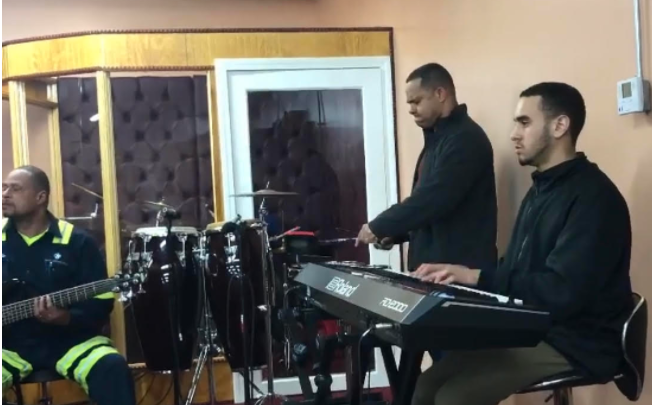
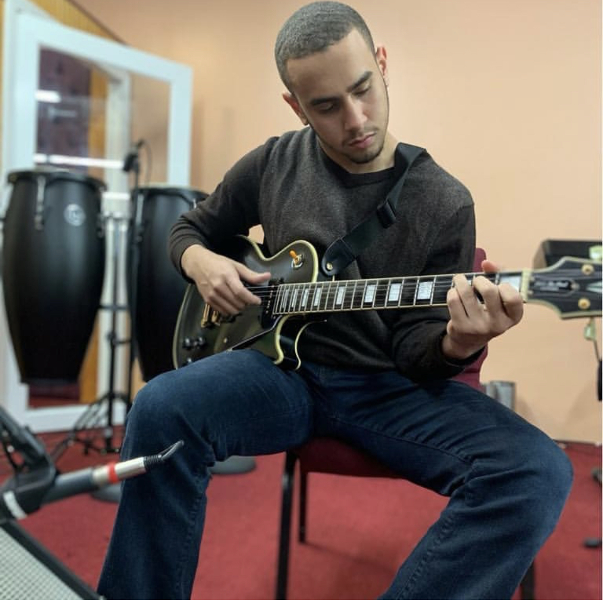

I am Jeshua Benzant. A freshman at the University of Rhode Island . I am a Computer Engineering major while also pursuing a minor in Computer Sceince. As a kid I loved music, math, and art. I still do today, especially with music. It has been a major influence in my life and I can define it as part of who I am. Here I have two instruments that I love to play. My primary one is piano, you can see me playing it on the left image of the screen. With the amount of music theory I have aquired over the years, I have learned how to pass that over to pass that over to guitar and it has been pretty fun up until now. I'm far from calling myself an expert. But that is part of the journey.  